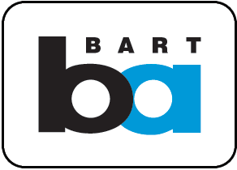
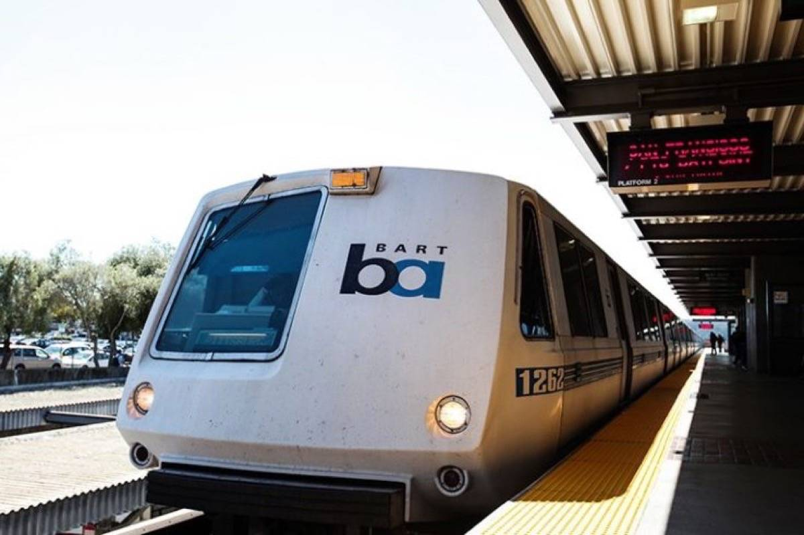

Transit in Berkeley
 Part of a Series on Berkeley transit, you may also be looking for:
BART, or Bay Area Rapid Transit, is the local metro system in the Bay Area that serves 4 counties: San Francisco, Alameda, Contra Costa and San Mateo County. Berkeley has 3 BART stations: North Berkeley, Downtown Berkeley, and Ashby Avenue Stations. The system will be useful for regional travel, with travel times up to 15 minutes from Downtown Berkeley to Oakland, and 22 minutes to San Francisco. Learning how to ride BART will be very useful when you need to leave the city or your commute.
If it's not clear, watch this Youtube video!
If you need a map of Berkeley, click here and I'll take you to a map!